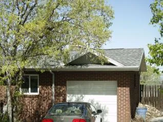
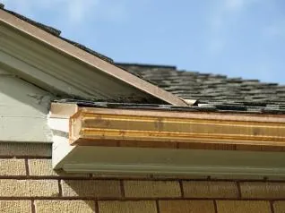
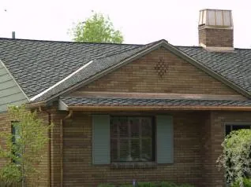
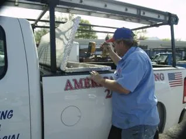
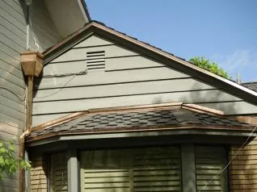

Historic roofs are evidence of the craftsmanship and architectural ingenuity of bygone eras. It’s our heritage, right above our heads! As such, we must keep roofs in optimal shape for future generations with proper historic roof repair and restoration.
At American Roofing, Utah’s local roofing contractors, we’re well-versed in the unique designs of these historic gems, skillfully and expertly restoring them to their original splendor. If you need historic roof repair in the Greater Salt Lake and Utah County areas, we’ve got you covered.
Request Free Quote!
Types of Historic Roofing Materials
Historic roofs showcase diverse materials and craftsmanship. Understanding these materials is vital for effective historic roof restoration. Let’s explore some commonly used ones.
- Slate: Once the choice of royalty and aristocrats, slate roofs are both durable and naturally elegant. Their longevity and timeless appeal make them a common sight in historic districts.
- Wood Shingles: Buildings with wood shingles exude a rustic, warm appeal. Often made from cedar or redwood, these shingles age gracefully, taking on a silvery hue over time.
- Clay Tiles: With their Mediterranean flair, you’ll often find clay tiles on Spanish Colonial and Mission-style homes. These resilient tiles are baked in kilns and add a touch of class to any building.
- Metal Roofs: Dating back centuries, metal roofs, especially those made from copper or tin, have a reputation for durability. They patinate beautifully, giving buildings an evolving aesthetic as years go by.
Many historic structures proudly showcase these materials, including the landmarked mansions in Salt Lake’s Avenues district or the age-old chapels in Utah County. When you wander these areas, the love and care invested in historic roof restoration become evident, with every rooftop telling its own story.
A roof in poor condition risks aesthetic and structural damage to the building it’s supposed to protect. When a historic roof shows signs of age, like sagging, missing or damaged shingles, rot, or staining, it’s time to consider a repair.
Remember, if you’re looking to restore the historic charm of your building, knowledge of the original materials is essential. At American Roofing, we’re dedicated to preserving that legacy.






The Repair Process and Its Importance
Historic roof repair is a balance of preserving the past and ensuring longevity for the future. The process of restoring these treasured structures involves a multifaceted approach. Here’s what’s involved.
Assessment and Documentation: The initial stages involve thorough assessments, documenting existing materials, conditions, and historical construction methods. Photographs, blueprints, and written records become crucial to maintain architectural integrity during restoration.
Material Sourcing: A deep dive into the past, sourcing or replicating original materials—slate, wood, or metal—is essential to honor its authentic aesthetic. Your contractor must carefully preserve the structure’s original qualities while making it more durable.
Skilled Craftsmanship: Specialized artisans, adept in historical techniques, weave their expertise into restoring or recreating elements with utmost precision and care. Our roofers carefully copy the original craftsmanship, ensuring the roof continues to tell its historical tale.
Regular Inspections and Maintenance: Periodic inspections ensure early wear detection, preventing minor issues from evolving into significant concerns. Proactive maintenance, from cleaning gutters to replacing damaged tiles, protects against the elements and preserves the structure underneath.
Compliance with Local Regulations: Adherence to guidelines ensures that the historic and cultural significance of buildings is upheld, contributing to the collective heritage of our communities.
In every restoration, we don’t just see structures; we see stories, and through meticulous repair and restoration, we aim to keep those stories alive and well-preserved.
Why Choose American Roofing for Historic Roof Restoration and Repair
Historic roof restoration isn’t like regular roof jobs. It requires the attention of seasoned professionals who understand the history they’re restoring.
American Roofing is deeply rooted in Utah; we know and love our heritage! We’ve studied the look and design of the roofs in our community, and our roofers have the specialized skills needed to restore them. Furthermore, we take great pride in our work because our reputation is at stake with every project.
Our seasoned team has successfully restored numerous historic roofs, respecting and incorporating traditional methodologies with the durability demanded by modern-day elements.
At American Roofing, we also adhere to local and national standards for historic preservation. Our craftspeople bring to life the old historic roofs with every shingle placed and every beam secured, preserving your historic roof’s original appearance and structural integrity.
Get in Touch with American Roofing
Don’t let time erode the stories your historic roofs have to tell. Choose American Roofing as the local roofers in your area. We prioritize expert repair and restoration services. Let’s preserve history together.
Contact us today to learn more about our services or request a free quote.